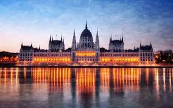

Ez egy gyöngyörű kép Budapestről
Nézzétek meg IRL is koszi puszi
Budapest Magyarország fővárosa, egyben legnagyobb és legnépesebb városa, az Európai Unió legnépesebb városai közé tartozik.
Egy kis érdekesség Budapestről:
-
Sport
- Budapesten találhatók MO. központi sportlétesítményei
- Az észak-budai Duna-part a vízi sportok központja.
- Budapest Magyarország labdarúgásának központja. A 108 eddig lezajlott bajnokságból 97-et budapesti csapatok nyertek.
-
Kultúra
- Kulturális eseményekben a legnagyobbak közé tartozik a Sziget Fesztivál
- Több olyan része is van, ahol sok étterem, bár és kávézó található kis területen
- Budapesten európai viszonylatban is neves tudományos könyvtárak működnek
-
Parkok és terek
- Hősök tere a főváros legtágasabb és legnagyobb hatású tere, melynek közepén áll a Millenniumi emlékmű
- A Szabadság tér az V. kerületben található
- Legjelentősebbek a Hősök tere, a Kossuth Lajos tér, a Szabadság tér, a Szent István tér, a Deák Ferenc tér, a Vörösmarty tér, az Erzsébet tér, a Szent György tér és a Széchenyi István tér
Ez a kép gyöngyörű elfordítva (véletlen sem azért ilyen, mert nem tudom hogy kell vissza fordítani)

Vajas kenyér összetevői
Tudom nagyon meglepő de: Vaj és Kenyér szükséges az elkészítéséhez, ennek a remek műnek
A magyarok:
a legjobb vizilabdások (can't change my mind)
...
Linux